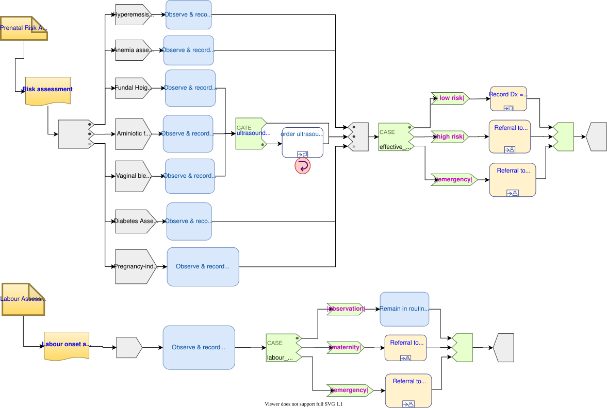

Antenatal Care
The following pregnancy care DLM was developed by Danielle S Alves (RN, midwife) as part of her PhD thesis at Federal University of Pernambuco (UFPE), Brazil.
Work Plan
The following Work Plan is the standard risk assessment for an antenatal visit.

Figure 1. Pre-natal risk assessment Work Plan
Pregnancy Risk Assessment DLM
dlm ruleset pregnancy_risk_assessment.v0.5.0
definitions -- Descriptive
language = {
original_language: [ISO_639-1::en]
}
;
description = {
lifecycle_state: "unmanaged",
original_author: {
name: "Danielle Santos Alves",
email: "dsa3@cin.ufpe.br",
organisation : "Universidade Federal de Pernambuco",
date: 2020-12-02
},
details = {
"en" : {
language: [ISO_639-1::en],
purpose: "Rules representing the risks during pregnancy."
}
},
copyright: "© 2020 Danielle Santos Alves",
licence: "Creative Commons CC-BY <https://creativecommons.org/licenses/by/3.0/>",
}
;
preconditions
is_pregnant
definitions -- Types
Risk_type ::= Ordinal
map =
-------------------
#emergency: 2,
#high_risk: 1,
#low_risk: 0
-------------------
;
input -- Historical state
is_type1_diabetic: Boolean
;
previous_obstetric_hypertension: Boolean
;
previous_pre_eclampsia: Boolean
;
previous_eclampsia: Boolean
;
previous_gestational_diabetes: Boolean
;
family_history_of_diabetes: Boolean
;
race_related_diabetes_risk: Boolean
;
|
| Macrosomic baby from any previous pregnancy
|
previous_macrosomic_baby: Boolean
;
is_pregnant: Boolean
;
has_gestational_diabetes: Boolean
;
has_pregnancy_hypertension: Boolean
;
has_pre_eclampsia: Boolean
;
has_eclampsia: Boolean
;
has_anaemia_of_pregnancy: Boolean
;
input -- Tracked State
|
| Possible values:
| [premature rupture],
| #polyhydramnios, #oligohydramnios,
| [severe polyhydramnios], [severe oligohydramnios]
|
amniotic_fluid_state: Terminology_term «amniotic_fluid_state»
currency = 24h
;
uterine_fundal_height: Quantity
currency = 24h
;
vaginal_blood_flow: Quantity
currency = 30mins,
ranges["mL/hr"] =
---------------------------
|> 500|: #critical_high
---------------------------
;
|
| Assessment of vaginal bleeding, pain, confirm
| with ultrasound. Result value-set includes
| |placenta previa|, |risk of miscarriage|,
| |ectopic pregnancy| etc
|
vaginal_physical_exam_assessment: Terminology_term
currency = 48h
;
vomiting_assessment: Terminology_term
currency = 48h
;
ultrasound_finding: Terminology_term
currency = 48h
;
|
| Amniotic fluid index (cm) via 4-quadrant method
|
amniotic_fluid_index: Real
currency = 24h,
ranges["cm"] =
------------------------------------
|> 14|: #polyhydramnios,
|≥ 5 .. ≤ 14|: #normal,
|< 5|: #oligohydramnios
------------------------------------
;
labour_onset_assessment: Terminology_term
currency = 24h
;
rules -- Main
|
| Convert BMI to ranges
|
bmi_range: Terminology_code «COMMON.simple_ranges»,
Result := case BMI.BMI in
===========================
|> 30|: #high,
---------------------------
|≥ 15 .. ≤ 30|: #normal,
---------------------------
|< 15|: #low
===========================
;
|
| Possible values:
| |excluded|, |anaemia of pregnancy|
|
anaemia_type: Terminology_term «anaemia_type»,
Result := not has_anaemia_of_pregnancy ? #excluded : #anaemia_of_pregnancy
;
ultrasound_required: Boolean
Result := fundal_height_related_risk != #low_risk or
amniotic_fluid_risk != #low_risk or
vaginal_bleeding_related_risk != #low_risk
;
anaemia_risk: Risk_type
Result := case anaemia_type in
============================================
#severe_anaemia_of_pregnancy: #emergency,
--------------------------------------------
#anaemia_of_pregnancy: #high_risk,
--------------------------------------------
*: #low_risk
============================================
;
fundal_height_related_risk: Risk_type
Result := case ultrasound_finding in
=================================================
#interuterine_growth_retardation,
#multiple_pregnancy,
#macrosomia: #high_risk,
-------------------------------------------------
*: #low_risk
=================================================
;
amniotic_fluid_risk: Risk_type
Result := case amniotic_fluid_state in
=========================================
#premature_rupture,
#severe_oligohydramnios,
#severe_polyhydramnios: #emergency,
-----------------------------------------
#polyhydramnios,
#oligohydramnios: #high_risk,
-----------------------------------------
*: #low_risk
=========================================
;
vaginal_bleeding_related_risk: Risk_type
Result := case vaginal_physical_exam_assessment in
=================================================
#ectopic_pregnancy,
#gestational_trophoblastic_disease: #emergency,
-------------------------------------------------
#placenta_previa,
#risk_of_miscarriage: #high_risk,
-------------------------------------------------
*: #low_risk
=================================================
;
gestational_diabetes_risk: Risk_type
Result := choice of
=================================================
bmi_range = #high or
previous_macrosomic_baby or
previous_gestational_diabetes or
family_history_of_diabetes or
race_related_diabetes_risk or
has_gestational_diabetes or
is_type1_diabetic: #high_risk,
-------------------------------------------------
*: #low_risk
=================================================
;
hypertension_risk: Risk_type
Result := choice of
=================================================
has_pre_eclampsia or
has_eclampsia: #emergency,
-------------------------------------------------
previous_obstetric_hypertension or
previous_pre_eclampsia or
previous_eclampsia or
has_pregnancy_hypertension: #high_risk,
-------------------------------------------------
*: #low_risk
=================================================
;
labour_onset_pathway: Terminology
Result := case labour_onset_assessment in
====================================
#placental_abruption,
#premature_labour: #emergency,
------------------------------------
#onset_of_labour,
#labour_first_stage: #maternity,
------------------------------------
*: #observation
====================================
;
rules -- Output
|
| Return the highest level risk of any of the
| assessed risks
|
effective_risk: Risk_type
Result := Result.max ({fundal_height_related_risk,
amniotic_fluid_risk,
vaginal_bleeding_related_risk,
hypertension_risk,
hyperemesis_related_risk,
gestational_diabetes_risk,
anaemia_risk})
;
definitions -- Terminology
terminology = {
term_definitions = {
"en" : {
"low_risk" : {
text: "Normal obstetric care",
description: "..."
},
"emergency" : {
text: "Obstetric emergency",
description: "..."
},
"high_risk" : {
text: "Refer to high risk care",
description: "..."
},
"premature_rupture" : {
text: "Premature rupture of membranes",
description: "..."
},
"polyhydramnios" : {
text: "polyhydramnios",
description: "..."
},
"oligohydramnios" : {
text: "oligohydramnios",
description: "..."
},
"severe_polyhydramnios" : {
text: "severe polyhydramnios",
description: "..."
},
"severe_oligohydramnios" : {
text: "severe oligohydramnios",
description: "..."
},
"severe_anaemia_of_pregnancy" : {
text: "anaemia of pregnancy, severe",
description: "..."
},
"anaemia_of_pregnancy" : {
text: "anaemia of pregnancy",
description: "..."
},
"amniotic_fluid_risk" : {
text: "Risk of pregnancy-related amniotic fluid",
description: "..."
},
"hypertension_risk" : {
text: "Risk of pregnancy-related hypertension",
description: "..."
},
"diabetes_risk" : {
text: "Risk of pregnancy-related diabetes",
description: "..."
},
"anaemia_risk" : {
text: "Risk of pregnancy-related anaemia",
description: "..."
},
"previous_macrosomic_baby" : {
text: "Baby weighing 4.5kg or above",
description: "..."
},
"previous_gestational_diabetes" : {
text: "xxx",
description: "..."
},
"ectopic_pregnancy" : {
text: "Ectopic pregnancy",
description: "..."
},
"gestational_trophoblastic_disease" : {
text: "Gestational trophoblastic disease",
description: "..."
},
"previous_macrosomic_baby" : {
text: "Baby weighing 4.5kg or above",
description: "..."
},
"previous_gestational_diabetes" : {
text: "xxx",
description: "..."
}
}
},
value_sets = {
"amniotic_fluid_state" : {
id: "amniotic_fluid_state",
members: ["premature_rupture", "polyhydramnios", "oligohydramnios", "severe_polyhydramnios", "severe_oligohydramnios"]
},
"anaemia_type" : {
id: "anaemia_type",
members: ["excluded", "anaemia_of_pregnancy"]
}
}
}
;